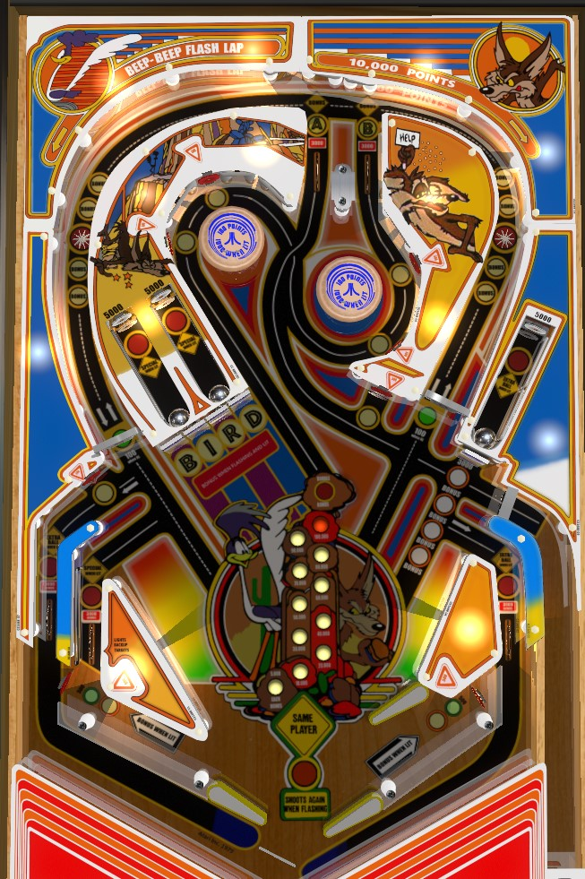

Hit lit standup targets around the game to unlight them and qualify bonus advances on the orbits, then shoot those orbits to cash in the bonus advances and relight the standup targets. Each bonus advance is 5,000 points; max base bonus is 100,000. Double your bonus by collecting both A and B from the top lanes. Once bonus is maxed and doubled, shoot full orbit shots for 10,000 points each, or complete the BIRD drop targets to light extra balls and/or specials at the captive balls.
There are 4 standup targets in each half of the game (left and right); two near a pop bumper, one directly shootable from the flippers in the lower half of the playfield, and one "shatz target" available in the in lanes behind each flipper. Standup targets score 500 points. Hitting a lit white target qualifies one bonus advance at the star rollover in the left or right orbit. Star rollovers score a flat 500 points, plus up to 4 bonus advances based on the lit white lights. Making a star rollover unlights the qualified bonus advances and relights the standup targets for that half of the table.
The "shatz" targets behind the flippers can be hit by shooting the ball directly into their lanes from the opposite flipper, or by holding up a flipper and letting the ball roll up toward the target following a high speed return feed from an orbit or bumper shot. The shatz targets score a bonus advance when hit after they have already been used to light an orbit bonus advance; no other standup targets do this.
Any full shot around the entire orbit in any direction scores 10,000 points. The left star rollover causes the left pop bumper to toggle between unlit (100 points) and lit (1,000 points); the right orbit star rollover does the same for the right pop bumper.
Having the left orbit qualified for all 4 bonus advances at once lights the left out lane for extra ball. Having the right orbit qualified for all 4 bonus advances at once lights the right out lane for extra ball. Having both orbits fully lit for 8 bonus advances total all at the same time lights the left in lane for a Special.
Both orbit entrances have a spinner that scores 10 points when not lit or 100 points when lit. Making the A top lane lights the left spinner, and making the top B lane lights the right spinner. Spinners are not very valuable. Making both A and B in the same ball lights Double Bonus, which can be worth up to 100,000 points at the end of the ball. On their own, the A and B top lanes always score 3,000 points.
All drop targets score 3,000 points. BIRD targets start lit. Hit a lit target to make it flash and score a bonus advance; hit a flashing target to unlight it and score a bonus advance. Unlit targets do not advance the bonus. The single drop target in front of the right captive ball scores a bonus advance for each target in the BIRD bank that is currently down. Hitting either captive ball behind the BIRD bank resets the targets, regardless of whether the 4-bank in front of them has been completed or not. Making all 4 letters be unlit or flashing lights the right captive ball for an extra ball. Making all 4 BIRD letters be unlit lights the captive balls behind the BIRD targets for a Special. All captive ball hits score 5,000 points on top of the possibility of being lit for extra ball or Special. Hitting any captive ball resets the entire target bank in front of it.
The left side of the table bottom is conventional, but with a very large slingshot since the game is a widebody. The right side of the table bottom has a more standard-sized slingshot, no in lane, and a second flipper that ends up not being very useful in normal gameplay. Notice that the left and lower right flippers are not symmetrical, which can have a strange impact on flipper skills. The "shatz" targets behind the flippers always score 500 points; when lit green, they add 1 bonus advance to the orbit star rollover on the same side of the table, and when lit white, they advance the bonus directly. Hitting a green target switches it to white; making an orbit when a shatz target is white changes it back to green.
Each bonus advance is worth 5,000 points in base bonus. BIRD drop targets give 1 bonus advance when lit or flashing. The solo right drop target gives 0-4 bonus advances based on how many BIRD targets are currently down. Hitting lit standup targets lights the orbits; making the star rollover in an orbit gives 1 bonus advance per white light and resets the targets on that half of the playfield. Making both the A and B top lanes in the same ball lights double bonus. Max bonus is 2x 100,000 = 200,000 points. Base bonus and bonus multiplier cannot be held between balls and there is no mid-ball bonus collect. Earning a high bonus on every ball is extremely important toward earning a good score.
Specials can be set to score a free game, an extra ball, 50,000 points, or 60,000 points. Extra balls can be set to score 1 extra ball, 20,000 points, or 30,000 points. Only one actual extra ball can be earned per ball in play, but if the Special and/or Extra Ball award is set to points, it can be collected repeatedly.